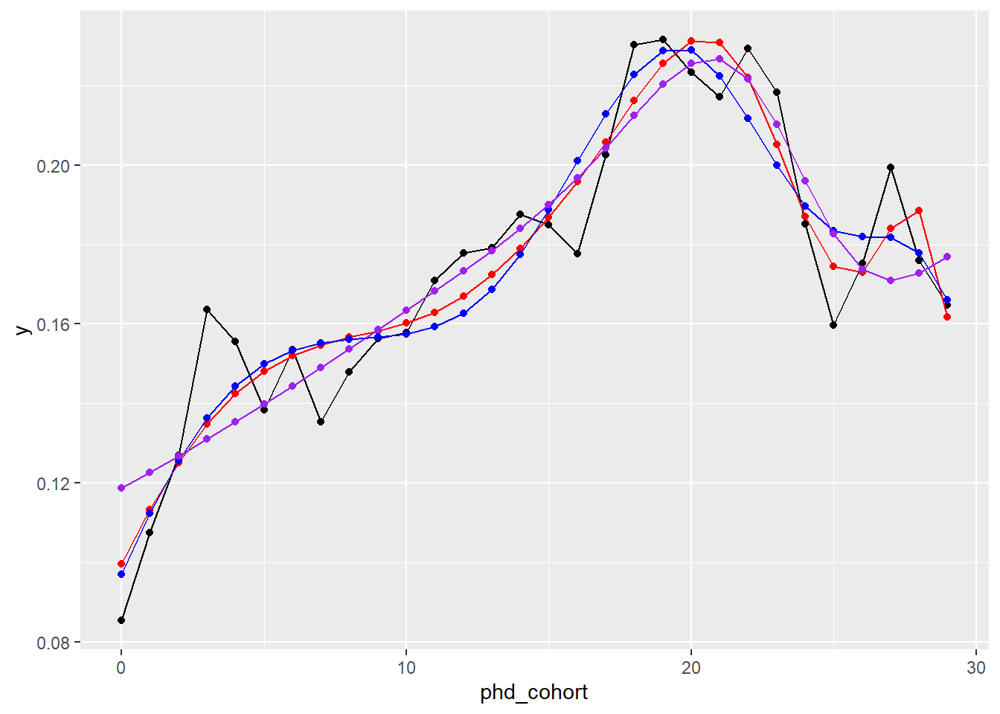

Appendix 1: splines’
Last compiled on februari, 2024
This lab journal demonstrates how we treat the association between PhD cohort and ‘starting to publish’ flexibly.
Custom functions
fpackage.check: Check if packages are installed (and install if not) in R (source).
fpackage.check <- function(packages) {
lapply(packages, FUN = function(x) {
if (!require(x, character.only = TRUE)) {
install.packages(x, dependencies = TRUE)
library(x, character.only = TRUE)
}
})
}Packages
packages = c("tidyverse", "ggplot2", "ggpubr", "RColorBrewer", "margins", "splines", "splines2", "boot",
"kableExtra", "DescTools")
fpackage.check(packages)Input
We use one processed dataset.
- df_starting.rda:
dataset of PhDs with all relevant variables: gender + ethnicity +
university + PhD year
- For construction of this dataset see Dependent Variables : Starting and Stopping to Publish
- name of dataset:
df_starting
load(file = "./data/processed/df_starting.rda")Given that the probability to start publishing appears to depend non-linearly on PhD cohort (see below), we attempt to deal with the effect of cohort a bit more flexibly. To do so, we uses splines.


Model 3: Gender, ethnicity and controls
(Non-)linear effects of PhD cohort
We use splines instead of polynomials, because cubic effects of cohort on ‘starting to publish’ do not capture the trend very accurately, but using higher order polynomials is not advisable. Therefore, we investigate the use of splines with several knots, determining the splines based on a spline-only model.
# no nodes
test1 <- glm(start_pub ~ ns(phd_cohort, 3), family = binomial, data = df_starting)
test2 <- glm(start_pub ~ bSpline(phd_cohort, df = 3), family = binomial, data = df_starting)
knots5 <- quantile(df_starting$phd_cohort, probs = seq(0, 1, 0.25))[2:4]
test3 <- glm(start_pub ~ bSpline(phd_cohort, knots = knots5, df = 3), family = binomial, data = df_starting)
knots6 <- quantile(df_starting$phd_cohort, probs = seq(0, 1, 0.2))[2:5]
test4 <- glm(start_pub ~ bSpline(phd_cohort, knots = knots6, df = 3), family = binomial, data = df_starting)
test5 <- glm(start_pub ~ ns(phd_cohort, knots = knots5, df = 3), family = binomial, data = df_starting)
test6 <- glm(start_pub ~ ns(phd_cohort, knots = knots6, df = 3), family = binomial, data = df_starting)res <- AIC(test1, test2, test3, test4, test5, test6)
res[order(res$AIC), ]#> df AIC
#> test4 8 81571.21
#> test3 7 81591.71
#> test6 6 81605.42
#> test5 5 81615.85
#> test1 4 81642.83
#> test2 4 81651.75Let us visually inspect the top3.
df_starting %>%
group_by(phd_cohort) %>%
summarise(y = mean(as.numeric(start_pub))) -> df_starting2
nd <- data.frame(phd_cohort = c(0:29))
nd$y1 <- predict(test4, type = "response", newdata = nd)
nd$y2 <- predict(test3, type = "response", newdata = nd)
nd$y3 <- predict(test6, type = "response", newdata = nd)
ggplot() + geom_line(data = df_starting2, aes(x = phd_cohort, y = y)) + geom_point(data = df_starting2,
aes(x = phd_cohort, y = y)) + geom_line(data = nd, aes(x = phd_cohort, y = y1), col = "red") + geom_point(data = nd,
aes(x = phd_cohort, y = y1), col = "red") + geom_line(data = nd, aes(x = phd_cohort, y = y2), col = "blue") +
geom_point(data = nd, aes(x = phd_cohort, y = y2), col = "blue") + geom_line(data = nd, aes(x = phd_cohort,
y = y3), col = "purple") + geom_point(data = nd, aes(x = phd_cohort, y = y3), col = "purple")
They all more or less predict the trend. We go for the blue line, the following model
knots5 <- quantile(df_starting$phd_cohort, probs=seq(0,1,0.25))[2:4]
test3 <- glm(start_pub ~ bSpline(phd_cohort, knots=knots5,df=3), family = binomial, data = df_starting)This would imply we go for the following model 3:
glm(start_pub ~ gender + ethnicity2 + uni + bSpline(phd_cohort, knots=knots5,df=3), data = df_starting, family = binomial)
Copyright © 2023